Si riportano le analisi delle vendite della paninoteca dell’oratorio Regina Pacis di Saronno, negli anni dal 2021 al 2025. Tale servizio si svolge tipicamente in una settimana di fine settembre. Il dataset raccolto, storico_vendite_2021-2025.csv, è disponibile su github. Le analisi sono svolte su R, e il codice è mostrato per completezza, ma non è il principale oggetto di interesse di questo rapporto
Q P n_day_clients n_day_sells
Min. : 0.00 Min. :1.000 Min. : 18.00 Min. : 49.0
1st Qu.: 2.75 1st Qu.:2.500 1st Qu.: 46.00 1st Qu.:115.0
Median : 7.00 Median :3.000 Median : 88.00 Median :198.0
Mean : 15.24 Mean :3.092 Mean : 84.33 Mean :216.4
3rd Qu.: 15.25 3rd Qu.:4.000 3rd Qu.:115.00 3rd Qu.:302.0
Max. :141.00 Max. :6.000 Max. :213.00 Max. :554.0
prod weekday year
Length:288 Length:288 Min. :2021
Class :character Class :character 1st Qu.:2022
Mode :character Mode :character Median :2023
Mean :2023
3rd Qu.:2024
Max. :2025
statistiche univariate
Le variabili presenti nel dataset sono 5 (colonne), per 288 osservazioni (righe). Ogni osservazione è una combinazione di un prodotto venduto nella sera di un anno in un giorno della settimana a un dato prezzo.
Ecco le prime 5 righe del dataset, a titolo di esempio:
Code
head(df, 5)
# A tibble: 5 × 7
Q P n_day_clients n_day_sells prod weekday year
<dbl> <dbl> <dbl> <dbl> <chr> <chr> <dbl>
1 28 4 54 131 salamella mar 2021
2 14 3 54 131 cotto_e_fontina mar 2021
3 2 3 54 131 vegetariano mar 2021
4 5 3 54 131 speck mar 2021
5 5 3 54 131 hot_dog mar 2021
Descrizione sintetica di ogni variabile:
Q : quantità venduta (conteggio dei piatti venduti nell’arco della giornata)
P : prezzo unitario di vendita
year : numero dell’anno corrente
weekday : testo di tre lettere indicante il giorno della settimana (Lun-Dom). Viene codificata come una serie di 6 dummy (non 7), ovvero 6 variabili ciascuna pari a 1 se ci troviamo in quel giorno, 0 altrimenti.
prod : tipo di prodotto/piatto venduto (panino vegetariano, patatine, birra ecc). questa variabile può essere convertita in dummy, ma è sporca e richiede del preprocessing, in quanto in anni diversi panini simili hanno avuto nomi simili. Ad esempio, si può decidere di accorpare in un’unica classe le categorie hamburger, double burger e hamburger suino, anche se rappresentano prodotti diversi.
n_day_sells : somma di tutte le quantità vendute di tutti i piatti nel giorno e nell’anno considerato.
n_day_clients : numero complessivo di clienti che hanno acquistato qualsiasi cosa in quel giorno in paninoteca. Questo dato era mancante per l’anno 2022, e per quell’anno è stato imputato con una regressione lineare basata sulle variabili weekday e n_day_sells (la quale si può considerare la migliore proxy)
prodotti venduti
I prodotti venduti, e il numero di osservazioni della quantità venduta presenti per ciascuno, sono:
Si aggiunge qui una sovra-classe, che dice che tipo di cibo si sta vendendo. Soggettivamente, ritengo che queste aggregazioni siano le più sensate: panini, contorni, bibite e dolci.
Analoga esplorazione possiamo fare per i giorni e per gli anni.
Code
table(df$weekday)
dom gio lun mar mer ven
18 56 32 54 56 72
Code
table(df$year)
2021 2022 2023 2024 2025
44 44 76 108 16
analisi dei prezzi
Code
summary(df$P)
Min. 1st Qu. Median Mean 3rd Qu. Max.
1.000 2.500 3.000 3.092 4.000 6.000
Code
hist(df$P, main='prezzi fatti in Repax dal 2021 al 2025')
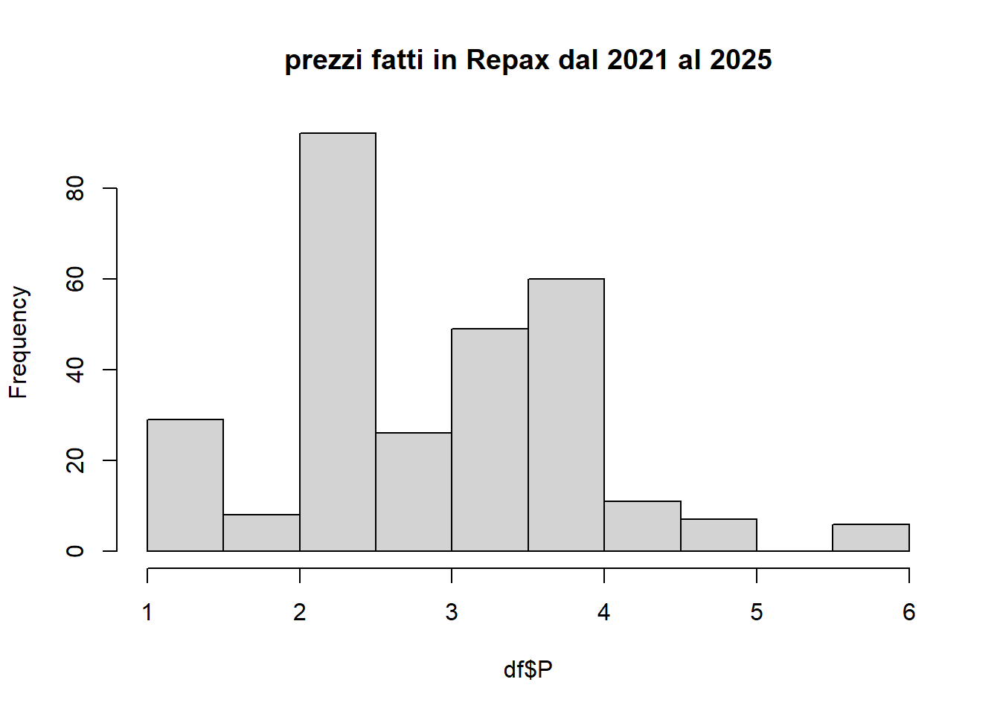
analisi delle quantità vendute
La variabile Q si presenta distribuita come Gamma o Poisson. Se la si vuole prevedere è conveniente modellizzarla come log-normale, ovvero trasformarla con logaritmo. Siccome in certi casi assume valore 0, si preferisce adottare la trasformazione log(x+1). In questo modo, è più facile che Q assuma una relazione lineare con le altre variabili, e quindi che un modello di previsione preveda bene log(Q+1).
Code
Q = df$Qsummary(Q)
Min. 1st Qu. Median Mean 3rd Qu. Max.
0.00 2.75 7.00 15.24 15.25 141.00
Code
par(mfrow=c(1,3))hist(Q, main ='distribuzione della quantità venduta', cex.main=0.9, breaks=50)hist(log(1+Q), main ='distribuzione della quantità venduta sotto logaritmo', cex.main=0.8, breaks=50)boxplot(log(1+Q), main='boxplot di log(1+Q)')
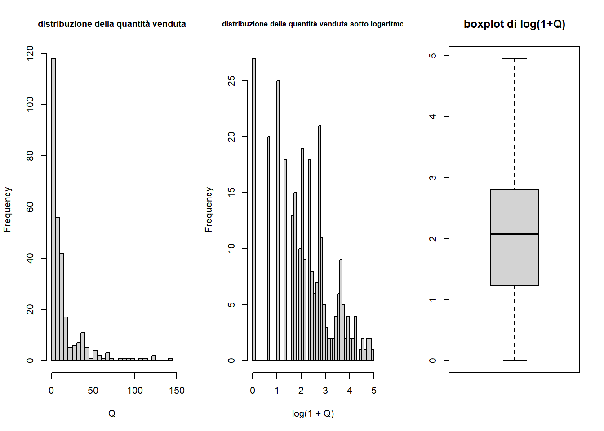
analisi bivariata di P e Q
Spesso assumiamo che esista una relazione inversa tra prezzo e quantità domandata. In realtà molto spesso veniamo smentiti.
Code
plot(df$P, df$Q, xlab='prezzo', ylab='vendite in una sera di un prodotto', main='P vs Q')#regressione lineare sempliceabline(lm(Q~P, data=df), col='red', lwd=2)#polinomio di grado 5mylm =lm(Q~poly(P,5), data=df)lines(df$P[order(df$P)], fitted(mylm)[order(df$P)] , col='orange', lwd=2)#spline di grado 1 con 5 nodimylm =lm(log(Q+1)~P + (P>1)*P + (P>2)*P + (P>3)*P + (P>4)*P + (P>5)*P, data=df)lines(df$P[order(df$P)], fitted(mylm)[order(df$P)] , col='blue', lwd=2)
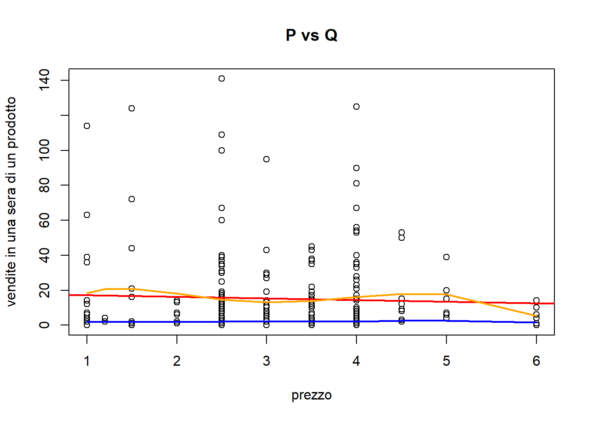
In questo caso l’associazione sembra terribilmente non lineare. Se si prova a fare la trasformazione con logaritmo:
Code
plot(df$P, log(df$Q+1), xlab='prezzo', ylab='log delle vendite in una sera di un prodotto', main='P vs log(Q+1)')#regressione lineare sempliceabline(lm(log(Q+1)~P, data=df), col='red', lwd=2)#polinomio di grado 5mylm =lm(log(Q+1)~poly(P,5), data=df)lines(df$P[order(df$P)], fitted(mylm)[order(df$P)] , col='orange', lwd=2)#spline di grado 1 con 5 nodimylm =lm(log(Q+1)~P + (P>1)*P + (P>2)*P + (P>3)*P + (P>4)*P + (P>5)*P, data=df)lines(df$P[order(df$P)], fitted(mylm)[order(df$P)] , col='blue', lwd=2)
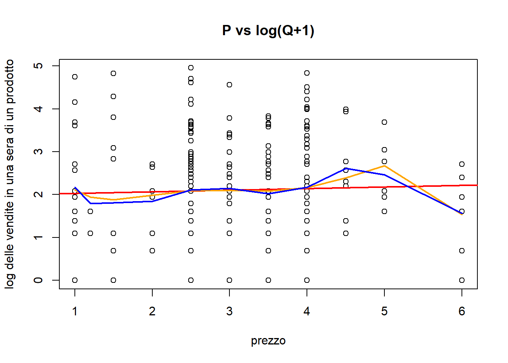
La relazione sembra ancora non lineare, ma si nota che la relazione tende a essere negativa per prezzi maggiori di 4, assente o quasi per prezzi inferiori. Di sicuro non è possibile prevedere adeguatamente la quantità domandata basandosi esclusivamente sul prezzo.
analisi bivariata di prod e food_type con Q
Di seguito, l’analisi bivariata tra la variabile Q e le altre verrà fatta senza usare la trasformazione logaritmo, per essere più interpretabile. L’addestramento del modello per prevederla invece utilizzerà tale trasformazione.
analisi boxplot
Questo grafico è ciò che si vorrebbe comprendere in questo capitolo:
Code
library(ggplot2)df %>%ggplot(aes(x=prod, y=Q, fill=prod)) +geom_boxplot() +ggtitle('quantità venduta vs prodotti') +theme_bw()
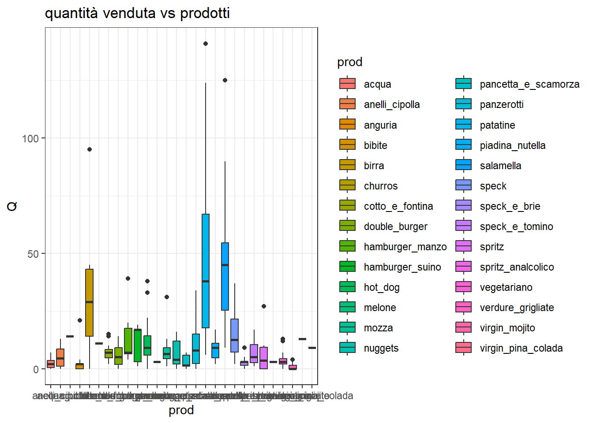
Non è facilissimo interpretarlo. Conviene spezzarlo nelle sue componenti.
Code
df %>%ggplot(aes(x=food_type, y=Q, fill=food_type)) +geom_boxplot() +ggtitle('quantità venduta vs tipi di prodotti') +theme_bw()
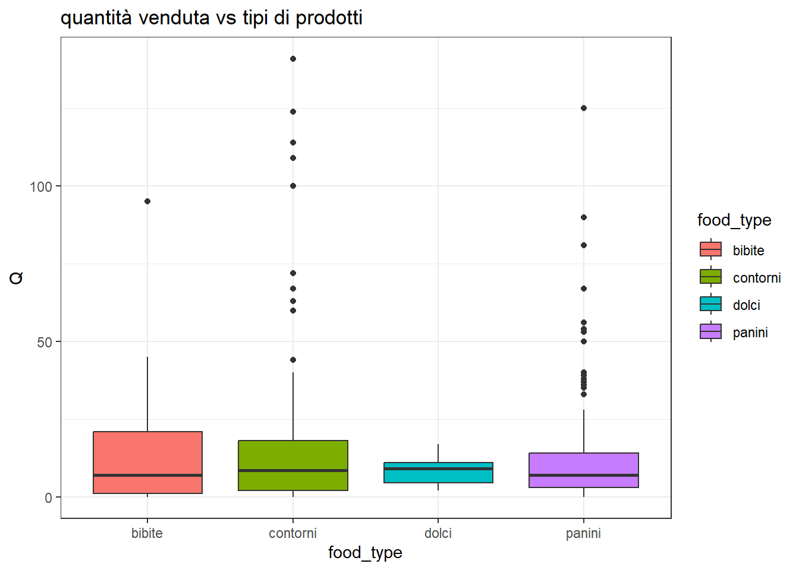
conviene rivedere lo stesso grafico per log(Q+1), per stabilire qual’è la vera gerarchia tra classi con Q maggiore o minore.
Code
df %>%filter() %>%ggplot(aes(x=food_type, y=log(Q+1), fill=food_type)) +geom_boxplot() +ggtitle('quantità venduta sotto log vs tipi di prodotti') +theme_bw()
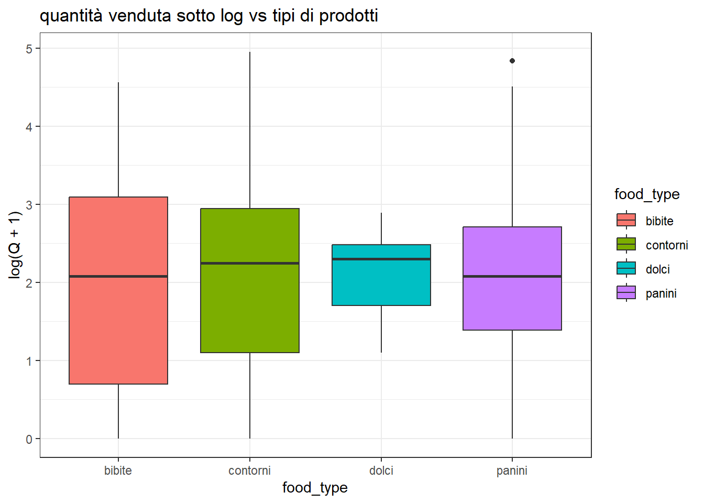
Come si distribuiscono queste quantità per ogni singola classe di prodotto?
Si noti che la classe bibite all’interno di bibite va letta come altre bibite. L’anguria è promettente in alcune stagioni. Non è ancora stata inserita nel dataset la variabile mese, che potrebbe spiegare che certi prodotti vanno meglio in certi periodi dell’anno.
analisi tabelle delle statistiche descrittive raggruppate
I boxplot sono esteticamente gradevoli ma a volte abbiamo bisogno di informazioni di dettaglio.
Ecco le statistiche descrittive per ogni prodotto della quantità giornaliera venduta:
food_type min q25 median mean q75 max std_dev n
1 bibite 0 16 30 33 45 95 24 18
2 contorni 18 52 82 89 118 224 54 20
3 dolci 2 5 9 10 12 32 7 20
4 panini 24 51 88 91 118 220 51 20
analisi bivariata di weekday con Q
Ripeto le stesse analisi fatte prima, ma sui giorni della settimana.
Si ricorda che la variabile n_day_sells è semplicemente Q aggregato come somma rispetto ai prodotti, ovvero è il numero totale di prodotti venduti in un anno e in una sera, di qualsiasi tipo. Inoltre la variabile n_day_clients è molto correlata con n_day_sells.
Code
df %>%mutate(weekday =factor(weekday, levels=c('lun', 'mar', 'mer', 'gio', 'ven', 'sab', 'dom')))%>%ggplot(aes(x=weekday, y=n_day_sells, fill=weekday)) +geom_boxplot() +ggtitle('quantità venduta totale vs giorni della settimana') +theme_bw()
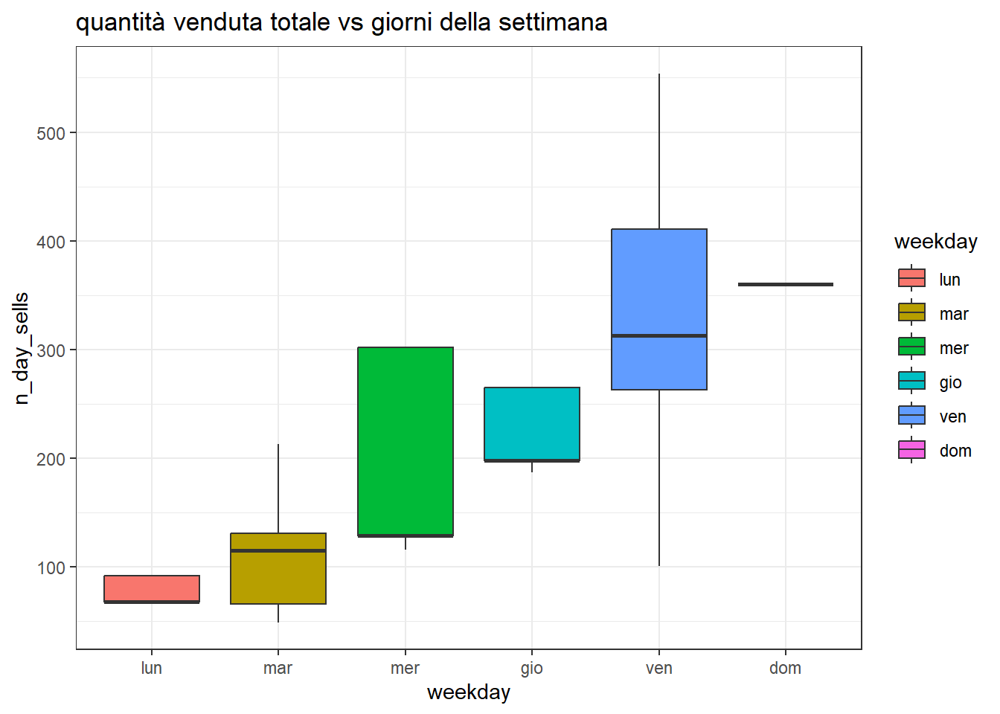
Si vede che se il numero complessivo di ordini in certi giorni della settimana è ben confinato in un intervallo.
Code
df %>%mutate(weekday =factor(weekday, levels=c('lun', 'mar', 'mer', 'gio', 'ven', 'sab', 'dom')))%>%ggplot(aes(x=weekday, y=n_day_clients, fill=weekday)) +geom_boxplot() +ggtitle('numero di clienti vs giorni della settimana') +theme_bw()
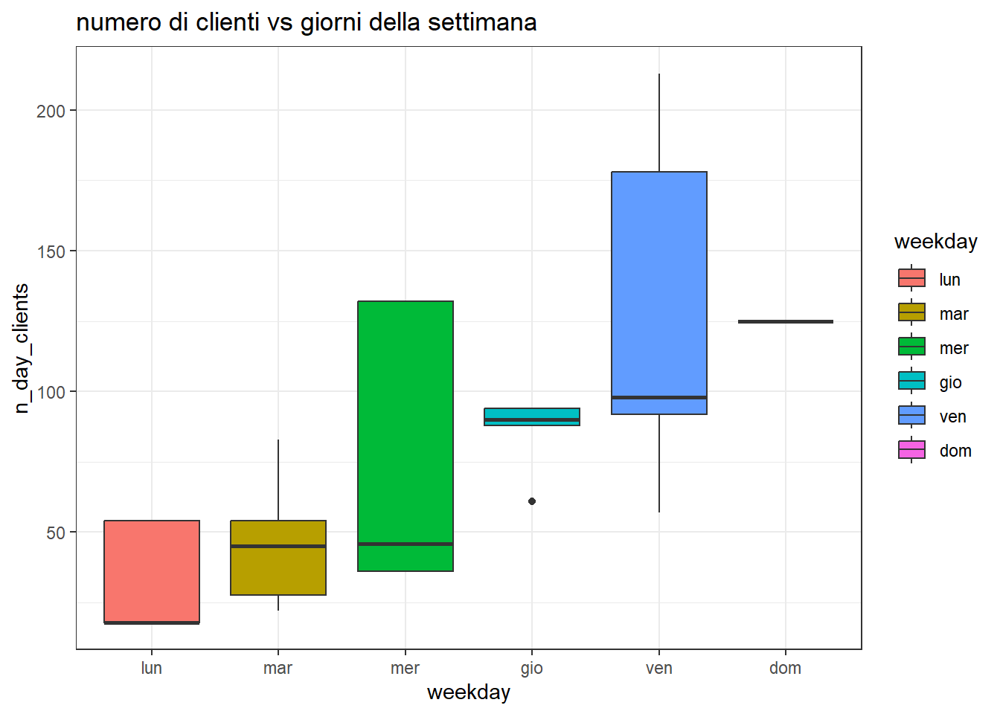
nel dettaglio, la distribuzione del totale delle vendite:
Code
tab = df %>%mutate(weekday =factor(weekday, levels=c('lun', 'mar', 'mer', 'gio', 'ven', 'sab', 'dom')))%>%group_by(weekday) %>%summarise(min =min(n_day_sells), q25=round(quantile(n_day_sells, 0.25)) , median=round(median(n_day_sells)), mean =round(mean(n_day_sells)), q75=round(quantile(n_day_sells, 0.75)), max=max(n_day_sells), std_dev =round(sd(n_day_sells)), n =n()) %>%as.data.frame() cat('summary of n_day_sells by weekday')
summary of n_day_sells by weekday
Code
cat('\n')
Code
cat('\n')
Code
print.data.frame(tab)
weekday min q25 median mean q75 max std_dev n
1 lun 68 68 68 78 92 92 12 32
2 mar 49 66 115 121 131 213 56 54
3 mer 116 129 129 209 302 302 89 56
4 gio 187 198 198 220 265 265 31 56
5 ven 101 263 313 316 411 554 149 72
6 dom 360 360 360 360 360 360 0 18
nel dettaglio, la distribuzione del numero di clienti:
Code
tab = df %>%mutate(weekday =factor(weekday, levels=c('lun', 'mar', 'mer', 'gio', 'ven', 'sab', 'dom')))%>%group_by(weekday) %>%summarise(min =min(n_day_clients), q25=round(quantile(n_day_clients, 0.25)) , median=round(median(n_day_clients)), mean =round(mean(n_day_clients)), q75=round(quantile(n_day_clients, 0.75)), max=max(n_day_clients), std_dev =round(sd(n_day_clients)), n =n()) %>%as.data.frame() cat('summary of n_day_clients by weekday')
summary of n_day_clients by weekday
Code
cat('\n')
Code
cat('\n')
Code
print.data.frame(tab)
weekday min q25 median mean q75 max std_dev n
1 lun 18 18 18 34 54 54 18 32
2 mar 22 28 45 49 54 83 21 54
3 mer 36 36 46 81 132 132 44 56
4 gio 61 88 90 85 94 94 12 56
5 ven 57 92 98 126 178 213 57 72
6 dom 125 125 125 125 125 125 0 18
relazione tra numero dei clienti e totale delle vendite
Si vede che n_day_clients e n_day_sells sono molto correlati. Ma qual’è il numero di prodotti pro capite acquistato dai clienti? Posso vedere il loro rapporto come un indice giornaliero, e quindi studiarne la distribuzione
Min. 1st Qu. Median Mean 3rd Qu. Max.
1.704 2.288 2.557 2.634 2.880 3.778
Code
hist(df$sells_clients_ratio, main='numero di piatti pro capite (n_day_sells/n_day_clients)', breaks=20)
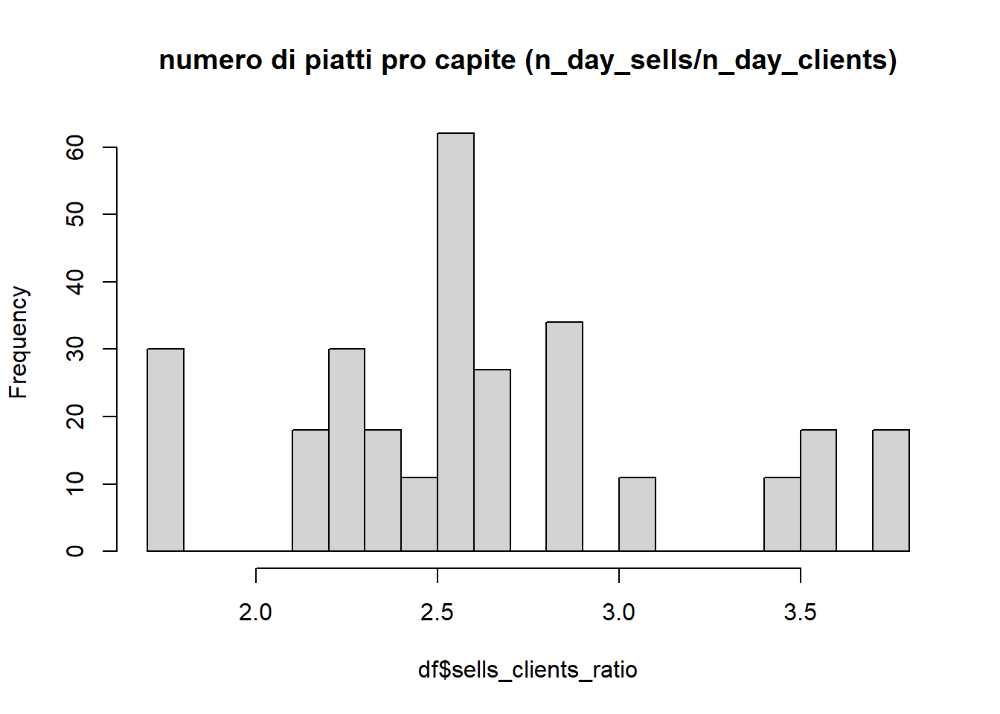
Si può quindi dire che in generale un cliente mangia tra i 2 e i 4 prodotti in una sera. La media è 2.6, per cui se si conosce il numero di clienti si sa che più o meno si avranno 2.6 volte lo stesso numerod prodotti acquistati.
Questo è il loro rapporto, ma forse una relazione lineare, con un termine di intercetta, potrebbe descrivere meglio questa relazione. Utilizzo allora due regressioni lineari per prevedere n_day_sells e n_day_clients, e dire se questo rapporto è affidabile o meno (è affidabile se il modello senza intercetta funziona meglio di quello con).
Call:
lm(formula = n_day_sells ~ n_day_clients, data = df)
Residuals:
Min 1Q Median 3Q Max
-49.759 -31.700 -0.426 24.810 77.731
Coefficients:
Estimate Std. Error t value Pr(>|t|)
(Intercept) 8.87741 3.70929 2.393 0.0173 *
n_day_clients 2.46078 0.03809 64.605 <2e-16 ***
---
Signif. codes: 0 '***' 0.001 '**' 0.01 '*' 0.05 '.' 0.1 ' ' 1
Residual standard error: 31.48 on 286 degrees of freedom
Multiple R-squared: 0.9359, Adjusted R-squared: 0.9356
F-statistic: 4174 on 1 and 286 DF, p-value: < 2.2e-16
Si vede che il primo modello ha un R^2 di 0.98, mentre il secondo di 0.93, per cui è meglio il primo, ovvero è meglio assumere che ci sia un rapporto costante tra il numero di clienti e il numero di ordini, piuttosto che usare un modello lineare classico con l’intercetta. Si nota che la miglior stima del loro rapporto, dato il numero di clienti, è 2.53, e non 2.63
Code
plot(n_day_sells ~ n_day_clients, data=df, main='numero di clienti e numero di acquisti')abline(reg_ratio, col='red', lwd=1.7)abline(reg_intercept, col='blue', lwd=1.7)legend('topleft', legend=c('modello senza intercetta', 'modello con intercetta'), col=c('red', 'blue'), lwd=1)
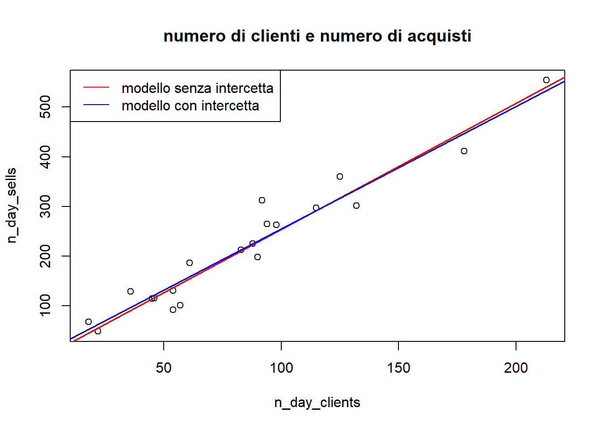
In effetti, se non ci sono clienti, la quantità venduta totale dovrebbe essere 0, per cui l’intercetta della retta dovrebbe essere 0.
relazione tra year e Q
In anni diversi vorrei che la quantità domandata non cambiasse. Questo perché gli anni futuri non mi sono noti, e di conseguenza se sono utili a prevedere il volume delle vendite fare tale previsione sarebbe più difficile.
Ora che sappiamo interpretare la relazione tra ogni singola variabile e la variabile Q, possiamo costruire un modello/oracolo che tenga insieme tutte le informazioni e fornisca la previsione più accurata possibile. La variabile da prevedere probabilmente non dovrà essere Q, ma log(Q+1), per rendere lineare la relazione tra Q e le altre variabili (le previsioni dovranno quindi essere trasformate con exp(x)-1).
Le variabili di input sicuramente da includere saranno prod, food_type (che è una generalizzazione di prod), price e weekday. La variabile year non presenta un andamento di trend lineare nel tempo, ma potrebbe servire ad aiutare l’apprendimento l’inclusione di una dummy per l’anno 2021 (in cui le vendite erano ridotte a causa del covid). La variabile n_day_clients non è effettivamente nota, per cui non andrebbe inclusa. Si potrebbe essere tentati di stimarla attraverso weekday, ma poi se si includesse anche weekday nel modello si avrebbero due variabili perfettamente correlate. Un approccio alternativo consente di includere queste variabili, e viene illustrato nel prossimo capitolo.
comparazione tra i modelli
Per poter effettivamente mettere a confronto diversi modelli, bisogna valutare le loro performance non sui dati su cui sono stati addestrati, ma su un dataset che non gli è mai stato mostrato. Qesto ha un costo in termini di dati di training, ma consente di fornire delle stime dell’errore che non siano condizionate da overfitting (fenomeno per cui un modello prevede molto bene i dati su cui è stato addestrato ma poi non è in grado di fare previsioni adeguate su nuovi dati).
I dati nel test verranno estratti casualmente da tutte le osservazioni disponibili, nella misura del 10% (per cui si avranno circa 30 osservazioni nel test e circa 260 osservazioni nel train).
La metrica di errore è il MAE (mean absolute error).
Si noti che non è possibile usare food_type e prod insieme, in quanto ogni dummy di food_type è in realtà una combinazione lineare delle dummy di prod. R^2 sul train è 0.51, e forse si può fare di meglio Ripeto usando food_type al posto di prod
Call:
lm(formula = Q ~ weekday + food_type + P, data = train_set)
Residuals:
Min 1Q Median 3Q Max
-28.185 -12.257 -5.874 3.029 111.815
Coefficients:
Estimate Std. Error t value Pr(>|t|)
(Intercept) 10.78967 8.66129 1.246 0.214
weekdaygio -0.07944 6.65385 -0.012 0.990
weekdaylun -10.23195 7.20131 -1.421 0.157
weekdaymar -5.53357 6.64746 -0.832 0.406
weekdaymer 1.32823 6.61788 0.201 0.841
weekdayven 9.76991 6.44914 1.515 0.131
food_typecontorni 6.88873 4.30251 1.601 0.111
food_typedolci -5.91190 5.84679 -1.011 0.313
food_typepanini 0.18560 4.97370 0.037 0.970
P 0.69486 1.96179 0.354 0.723
Residual standard error: 21.62 on 249 degrees of freedom
Multiple R-squared: 0.102, Adjusted R-squared: 0.06954
F-statistic: 3.142 on 9 and 249 DF, p-value: 0.001316
Si vede che prod contiene delle dummy molto utili, e che quando viene rimosso il modello peggiora. Quindi food_type è una variabile utile ai fini dell’interpretazione, ma non ai fini della previsione.
Gli errori sono i seguenti:
Code
cat('mae of ols1 on train:' ,MAE(predict(ols1, train_set), train_set$Q), '\n')
mae of ols1 on train: 8.842142
Code
cat('mae of ols1 on test:' ,MAE(predict(ols1, test_set), test_set$Q), '\n')
mae of ols1 on test: 10.25349
Code
cat('mae of ols2 on train:' ,MAE(predict(ols2, train_set), train_set$Q), '\n')
mae of ols2 on train: 13.94395
Code
cat('mae of ols2 on test:' ,MAE(predict(ols2, test_set), test_set$Q), '\n')
mae of ols2 on test: 14.45603
Si vedono 2 cose importanti: 1- il modello che usa prod funziona meglio del modello che usa food_type 2- il rischio di overfitting è presente, anche per un modello molto semplice come ols
modello 2: regressione lineare OLS su log(Q+1) (regressione poisson-gamma)
Si vede che R^2 è salito di 10 punti percentuali, e che alcune variabili, prima considerate trascurabili, ora sono significative. Le previsioni ora vanno riconvertite.
Code
cat('mae of ols3 on train:' ,MAE(exp(predict(ols3, train_set))-1, train_set$Q), '\n')
mae of ols3 on train: 7.373755
Code
cat('mae of ols3 on test:' ,MAE(exp(predict(ols3, test_set))-1, test_set$Q), '\n')
mae of ols3 on test: 8.696639
Sia sul train sia sul test l’errore è ridotto.
modello 3: regressione Lasso su log(Q+1)
Il modello Lasso è un modello di regressione lineare penalizzata. In alcuni casi performa meglio di ols.
Code
library(glmnet)lasso =glmnet(train_x, log(train_y+1), alpha=0, lambda=0.01)cat('mae of lasso on train:' ,MAE(exp(predict(lasso, train_x))-1, train_set$Q), '\n')
mae of lasso on train: 7.567575
Code
cat('mae of lasso on test:' ,MAE(exp(predict(lasso, test_x))-1, test_set$Q), '\n')
mae of lasso on test: 8.79128
In questo dataset la penalizzazione non aiuta
modello 4: knn su log(Q+1)
Questo modello prevede la variabile risposta semplicemente facendo la media delle k osservazioni più simili.
Code
library(caret)myknn <-train(log(Q+1) ~ weekday + prod + P,data = train_set,method ='knn' ,tuneGrid=data.frame(k=10))cat('mae of knn on train:' ,MAE(exp(predict(myknn, train_set))-1, train_set$Q), '\n')
mae of knn on train: 10.36519
Code
cat('mae of knn on test:' ,MAE(exp(predict(myknn, test_set))-1, test_set$Q), '\n')
mae of knn on test: 10.38283
Davvero pessimo. Senza prod:
Code
myknn <-train(log(Q+1) ~ weekday ++ P,data = train_set,method ='knn' ,tuneGrid=data.frame(k=10))cat('mae of knn on train:' ,MAE(exp(predict(myknn, train_set))-1, train_set$Q), '\n')
mae of knn on train: 11.90822
Code
cat('mae of knn on test:' ,MAE(exp(predict(myknn, test_set))-1, test_set$Q), '\n')
cat('mae of tree on train:' ,MAE(exp(predict(rtree, train_set))-1, train_set$Q), '\n')
mae of tree on train: 8.205877
Code
cat('mae of tree on test:' ,MAE(exp(predict(rtree, test_set))-1, test_set$Q), '\n')
mae of tree on test: 8.190583
Si vede che l’albero di decisione funziona peggio di ols sul train, ma va meglio sul test e generalizza abbastanza bene l’errore. A differenza dei modelli lineari, i modelli tree based possono migliorare particolarmente quando utilizzati con tecniche di ensemble learning, come bagging e boosting.
Senza prod:
Code
rtree =rpart(log(Q+1) ~ weekday + P, data=train_set, control=rpart.control(maxdepth =3))cat('mae of tree on train:' ,MAE(exp(predict(rtree, train_set))-1, train_set$Q), '\n')
mae of tree on train: 11.99486
Code
cat('mae of tree on test:' ,MAE(exp(predict(rtree, test_set))-1, test_set$Q), '\n')
mae of tree on test: 11.16833
modello 6: random forest su log(Q+1)
Il modello random forest è un’applicazione del bagging agli alberi, ovvero se ne addestrano tanti, ciascuno su una parte dei dati di train, e poi si prevede la media delle loro previsioni.
IncNodePurity
weekday 47.46497
prod 220.92408
P 24.02284
Code
cat('mae of rf on train:' ,MAE(exp(predict(rf, train_set))-1, train_set$Q), '\n')
mae of rf on train: 5.345208
Code
cat('mae of rf on test:' ,MAE(exp(predict(rf, test_set))-1, test_set$Q), '\n')
mae of rf on test: 6.872888
Si vede che il modello va troppo in overfitting per molti iperparametri, ma per particolari valori di sampsize alti (più del 90% delle osservazioni di train), riesce a migliorare molto sul test rispetto al singolo albero.
IncNodePurity
weekday 13.95808
prod 209.86326
P 15.44490
n_day_clients 77.36745
Code
cat('\n')
Code
cat('mae of rf on train:' ,MAE(exp(predict(rf, train_set))-1, train_set$Q), '\n')
mae of rf on train: 3.486898
Code
cat('mae of rf on test:' ,MAE(exp(predict(rf, test_set))-1, test_set$Q), '\n')
mae of rf on test: 9.722372
Anche con il modello migliore, l’inclusione di n_day_clients non sembra aiutare.
modello 7: xgboost su log(Q+1)
Code
library(xgboost)xgb =xgboost(data=train_x, label=log(train_y+1), verbose=0,nrounds=50, params=list(booster='gbtree', eta=0.1, max_depth=3))cat('mae of xgb on train:' ,MAE(exp(predict(xgb, train_x))-1, train_set$Q), '\n')
mae of xgb on train: 9.025689
Code
cat('mae of xgb on test:' ,MAE(exp(predict(xgb, test_x))-1, test_set$Q), '\n')
mae of xgb on test: 9.300064
Di solito il boosting funziona meglio di qualsiasi altra cosa, ma non è questo il caso.
modelli migliori
Alla fine i modelli idonei a fare stime su Q sembrano essere, in ordine di funzionalità:
il random forest su log(Q+1)
un albero di regressione su log(Q+1)
la regressione poisson (lineare su log(Q+1))
modelli per prevedere Q: stime indirette
La variabile n_day_clients non è effettivamente nota, per cui non andrebbe inclusa. Si potrebbe essere tentati di stimarla attraverso weekday, ma poi se si includesse anche weekday nel modello si avrebbero due variabili perfettamente correlate. Si è visto inoltre che il numero totale delle vendite è molto correlato con la quantità di prodotti complessivamente venduta (praticamente lo stesso valore moltiplicato per 2.53).
Perciò, un’idea alternativa rispetto a modelli che prevedono direttamente Q, potrebbe essere la seguente: - 1 stimare n_day_clients semplicemente attraverso la sua media storica giornaliera, e quindi attraverso weekday. - 2 stimare n_day_sells come la previsione di n_day_clients * 2.53. Si avrà quindi una stima costante per ogni giorno della settimana - 3 stimare per ogni prodotto non Q, bensì Q/n_day_sells, dove al posto di n_day_sells si pone 2.53*n_day_clients
Al punto 3, per fare in modo che le previsioni risultino percentuali comprese tra 0 e 1, bisognerà adottare una trasformazione logit al rapporto, prevederla con il modello, e poi ritrasformare le previsioni con logit inversa o sigmoide
Questo approccio è decisamente più articolato del precedente, ma forse risulterà più efficace. Alla fine stiamo facendo una specie di regressione binomiale, e una binomiale è molto vicina a una poisson.
Per le analisi, si tengono gli stessi dati di test e di train della sezione precedente.
step 1: stima del numero di clienti con weekday
Volendo prendere una media per giorno, bisogna di nuovo fare un modello senza intercetta. Non avendo osservazioni sul sabato questo comporta che non si potrà usare questo modello per prevedere quel giorno.
Call:
lm(formula = n_day_sells ~ n_day_clients + 0, data = train_set)
Residuals:
Min 1Q Median 3Q Max
-44.646 -29.744 2.317 22.451 80.195
Coefficients:
Estimate Std. Error t value Pr(>|t|)
n_day_clients 2.53048 0.01956 129.4 <2e-16 ***
---
Signif. codes: 0 '***' 0.001 '**' 0.01 '*' 0.05 '.' 0.1 ' ' 1
Residual standard error: 31.04 on 258 degrees of freedom
Multiple R-squared: 0.9848, Adjusted R-squared: 0.9848
F-statistic: 1.674e+04 on 1 and 258 DF, p-value: < 2.2e-16
step 3: stima dei valori percentuali dei prodotti
Utilizzo dato r = Q/totQ, si vede che quando Q=0 anche r = 0, e logit(r) va a infinito. Perciò introduco un termine logit(r+0.001) per non avere infinito.
IncNodePurity
P 45.22177
weekday 44.10310
prod 412.26477
Si vede che tutti e tre i modelli utilizzano praticamente solo il tipo di prodotto, ed escludono le altre variabili.
step 4: metto tutto insieme e stimo gli errori dei modelli
con totale delle vendite noto
Code
## totale vendite preso dai datiqtot_train = train_set$n_day_sellsqtot_test = test_set$n_day_sells##prevedi percentuali di venditaratio_ols_train =sigmoid(predict(ols_ratio, train_set))-gratio_ols_test =sigmoid(predict(ols_ratio, test_set))-gratio_tree_train =sigmoid(predict(tree_ratio, train_set))-gratio_tree_test =sigmoid(predict(tree_ratio, test_set))-gratio_rf_train =sigmoid(predict(rf_ratio, train_set))-gratio_rf_test =sigmoid(predict(rf_ratio, test_set))-g##stima erroricat('ols error on train', MAE(ratio_ols_train*qtot_train, train_set$Q), '\n')
ols error on train 6.091627
Code
cat('ols error on test', MAE(ratio_ols_test*qtot_test, test_set$Q), '\n')
ols error on test 8.461542
Code
cat('tree error on train', MAE(ratio_tree_train*qtot_train, train_set$Q), '\n')
tree error on train 6.328254
Code
cat('tree error on test', MAE(ratio_tree_test*qtot_test, test_set$Q), '\n')
tree error on test 8.206998
Code
cat('rf error on train', MAE(ratio_rf_train*qtot_train, train_set$Q), '\n')
rf error on train 4.3609
Code
cat('rf error on test', MAE(ratio_rf_test*qtot_test, test_set$Q), '\n')
rf error on test 6.391048
Si vede il nuovo record del random forest sul test!
con totale delle vendite non noto
Code
##prevedi numero clienticli_train =predict(ols_n_clients, train_set)cli_test =predict(ols_n_clients, test_set)##prevedi totale venditeqtot_train =predict(ols_n_sells, data.frame(n_day_clients=cli_train))qtot_test =predict(ols_n_sells, data.frame(n_day_clients=cli_test))##prevedi percentuali di venditaratio_ols_train =sigmoid(predict(ols_ratio, train_set))-gratio_ols_test =sigmoid(predict(ols_ratio, test_set))-gratio_tree_train =sigmoid(predict(tree_ratio, train_set))-gratio_tree_test =sigmoid(predict(tree_ratio, test_set))-gratio_rf_train =sigmoid(predict(rf_ratio, train_set))-gratio_rf_test =sigmoid(predict(rf_ratio, test_set))-g##stima erroricat('ols error on train', MAE(ratio_ols_train*qtot_train, train_set$Q), '\n')
ols error on train 7.983078
Code
cat('ols error on test', MAE(ratio_ols_test*qtot_test, test_set$Q), '\n')
ols error on test 9.219924
Code
cat('tree error on train', MAE(ratio_tree_train*qtot_train, train_set$Q), '\n')
tree error on train 8.363345
Code
cat('tree error on test', MAE(ratio_tree_test*qtot_test, test_set$Q), '\n')
tree error on test 8.923287
Code
cat('rf error on train', MAE(ratio_rf_train*qtot_train, train_set$Q), '\n')
rf error on train 6.681963
Code
cat('rf error on test', MAE(ratio_rf_test*qtot_test, test_set$Q), '\n')
rf error on test 7.127911
L’errore cresce a causa della stima sbagliata dei totali.
scelta finale
Tra i metodi di previsione diretta e il metodo di previsione indiretta c’è una lieve differenza in termini di performance. Se vi fosse una perfetta conoscenza del numero di clienti presenti in una sera, probabilmente il metodo indiretto mostrerebbe performance previsive superiori rispetto al metodo diretto. I metodi di previsione indiretta sono costruiti sulla base della conoscenza intrinseca del fenomeno, e questo li rende molto eleganti, e consentono di scomporre il problema di stima della quantità venduta in 3 diversi problemi di stima: 1 - stima del numero di clienti 2 - stima del numero di prodotti pro capite 3 - stima della percentuale di vendita di un prodotto
Alla fine però, questa decomposizione del processo di stima porta a una somma di errori di previsione complessivamente superiore a quella degli errori dei metodo diretto, che a discapito dell’interpretabilità resta più performante. La semplicità e l’ingnoranza sembra vincere, con i dati a disposizione, sulla reale natura del fenomeno. Se si includessero altre variabili, come i dati del meteo (temperatura, umidità, pioggia ecc), probabilmente l’approccio indiretto risulterebbe più performante. Sarebbe anche stato possibile omettere lo step di stima del numero di clienti, e stimare direttamente il totale delle vendite con il giorno della settimana. Infine va detto che la funzione sigmoide consente di rispettare il vincolo per cui le percentuali stimate sono comprese tra 0 e 1, ma non il vincolo per cui tali percentuali sommino a 1. Un’altra possibile miglioria potrebbe quindi essere quella di rinormalizzare le previsioni sotto sigmoide attraverso la loro somma, per ottenere delle percentuali che sommino a 1.
modelli addestrati su tutti i dati disponibili
Qui vengono addestrati i modelli finali, che verranno concretamente usati per fare previsioni. Si scelgono ols e random forest per prevedere separatamente la quantità stimata e la percentuale di venduto sul totale.
modello per stimare il totale di ordini in base al giorno
Questo modello è probabilmente più performante della soluzione a due stadi proposta prima (al posto che stimare n_day_clients con weekday e n_day_sells con la stima di n_day_clients stimo direttamente n_day_sells con weekday).
Volendo fornire quindi le previsioni a un utente finale, si fornisce la seguente tavola. Ogni riga rappresenta una combinazione di prezzo, giorno, prodotto e conseguentemente fornisce le stime della percentuale di vendita (dai modelli indiretti) e della quantità venduta (dal modello diretto).
I modelli ols_q, rf_q, ols_iq e rf_iq stimano tutti la quantità venduta di un prodotto, dati il prodotto, il giorno e il prezzo (considerato da 1 a 6 con passo 0.5). I modelli ols_r e rf_r stimano il rapporto tra la quantità venduta del prodotto come percentuale del totale delle vendite del giorno. Il modello p_sells (di tipo ols) stima, dato il giorno, il totale delle vendite di tutti i prodotti. Sotto le colonne ols_iq e rf_iq, rispettivamente, sono dati i prodotti tra le colonne ols_r e rf_r e la colonna p_sells.
Importante:
nessuna delle 4 stime è un oracolo perfetto
neanche la media delle diverse stime è necessariamente una buona stima, ed è più frequente che ce ne sia solo una più giusta delle altre.
la regressione lineare è una retta continua, per cui può muoversi su un dominio infinito, mentre il modello random forest (rf) è bloccato sugli intervalli osservati nei dati. La regressione lineare è più adatta per prevedere fenomeni eccezionali, ma nella maggior parte dei casi il modello rf funziona meglio.
Il modello p_sells dipende solo dai giorni, e di conseguenza fornisce sempre la stessa stima per lo stesso giorno.
La colonna p_sells viene rinominata ps.
Ecco le previsioni (con modelli addestrati su tutti i dati disponibili):